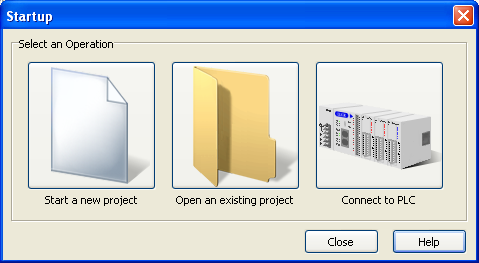

Topic: CL018

| New Project |
Topic: CL018
|
The Start a New Project button is accessed from the Startup window. You can open the Startup Window from the File Menu, by using the Ctrl + N keystroke shortcut, or by clicking the toolbar's New Project Icon .
.
When selected, Start a New Project takes you directly to a New Blank Project open in the Ladder Editor. At this point, the New Project is Not Saved.
The only Exception to this is when you are currently working in an Open Program and you have made changes to that program. The CLICK Programming Software will give you an opportunity to save the open project before replacing it with the New Project.
